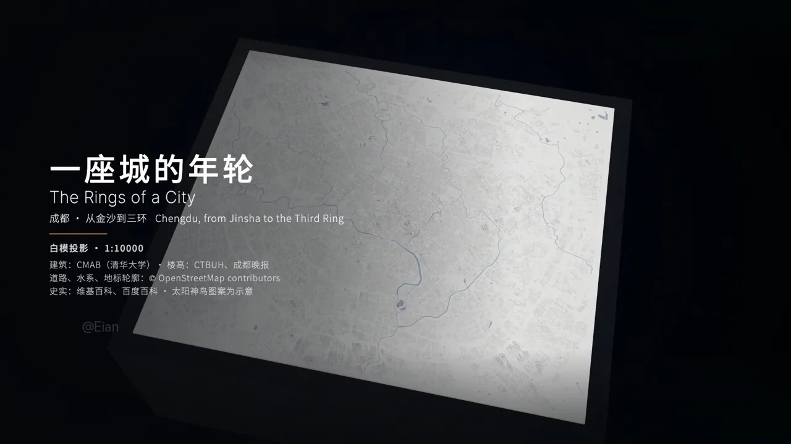

原帖（照录）
《一座城的年轮》谨以此片，献给我的家乡。
3,573 帧，74 亿个像素，319 平方公里，71,380 栋楼，按 1:10000 等比缩小，画面全部由 Claude 写代码渲染完成。 从公元前 1250 年到 2022 年，3,271 年的历史压进 149 秒。
这就是我的家乡：成都。 如果喜欢，请多多支持，感谢！
数据来源：CMAB（清华大学）©OpenStreetMap contributors
— Eian（@EianLu），2026-10-18。附视频 1920×1080、148.9 秒，在 X 观看。
这是什么
- 一部“数据白模”城市史短片。英文副题 The Rings of a City，封面写“成都 · 从金沙到三环”“白模投影 · 1:10000”。镜头俯瞰一块白色的成都三环内城市模型（319 km²、71,380 栋楼），时间从公元前 1250 年（金沙）一路推到 2022 年，城市像树的年轮一样一圈圈长出来。
- 画面没有用视频生成模型。作者说每一帧都由 Claude 写的代码渲染；配音另用豆包语音大模型 2.0（作者回复）。
- 数字自洽。3,573 帧 ÷ 149 秒 ≈ 24 fps；74 亿像素 ÷ 3,573 帧 ≈ 207 万像素/帧 ＝ 1920×1080；公元前 1250 年到 2022 年（无公元 0 年）＝ 3,271 年 ✅。
怎么做的：作者回复照录
作者没有公开代码仓库或项目页，也尚未发教程。评论区里与制作方法相关的作者回复（照录，时间为 SGT）：
差不多4个小时哈哈哈
差不多4个小时
差不多4个小时
还是有几轮交互的 但是交流很杂，反正总体把自家想要的感觉说清楚就行。
豆包语音大模型2.0便宜好用
你说视频成本？
比想象的低很多
API怕有点贵
喜欢的人多的话后面会出一个制作方法🫡
后面出一个！
很快就会实现的
数据来源
- 建筑：CMAB（清华大学）——Zhang, Zhao, Long 2025 年发表于 Scientific Data 的全国多属性建筑数据集：3,667 个城市、约 3,100 万栋建筑，每栋含屋顶轮廓、高度、功能、年代、结构、风格、质量；CC BY 4.0，Figshare 按省/城市提供 shapefile（论文）。
- 楼高补充：CTBUH（世界高层建筑与都市人居学会）、《成都晚报》（封面署名）。
- 道路、水系、地标轮廓：© OpenStreetMap contributors。
- 史实：维基百科、百度百科；太阳神鸟图案为示意。
核实提示：CMAB 的“年代”字段由 GAIA 不透水面数据（1985–2018）推得，只能区分约 1985 年以后的建成时间。所以片中 1985 年以前（金沙、秦城、明清三重城等）的段落应来自史料示意，而不是逐栋楼的历史数据——这正好回答了评论区 @Oscars_dou 的疑问。作者自己的回复是“挺牛的”，没有展开。
评论区的“复刻提示词”（非作者发布）
@divid_lu49394（larrymask）在回复里贴了一份长提示词，被收藏 148 次，是本帖最热的回复。开头是：“你是资深3D数据可视化与程序化动画工程师。请用Python（推荐Open3D / PyVista / 自定义Three.js离线渲染管线）编写完整可运行代码，生成一部149秒、约3573帧的成片《一座城的年轮》。”后面列了 CMAB + OSM 数据、按年代“生长”的时间节点（金沙→秦城→都江堰→锦官城→明清三重城→1958 年后环路外扩）、色调与镜头、实例化渲染等要求。这是网友的推测或重写，不是作者的原始提示词。作者只回了“牛皮哈哈👍👍👍”，没有确认。原文见 x.com/divid_lu49394/status/2111943432826679527。
评论区观点
- “比扩散模型更震撼”：@antmoch 说“这种程序化生成的数据叙事感比纯扩散模型生成的画面震撼太多了”。
- “AI 编程最有温度的打开方式”：@cfenghub 这样评价，并问换成国产模型能否复刻；作者答“很快就会实现的”。
- 马上有人跟做：@TristanLi99“交作业，做了个北京城”（附约 2 分钟视频）；@Liguanqiju3q“我也做了成都”；不少人表示也想做自己的家乡。
- 问方法、问成本：大量回复在问教程、开源、渲染时长和 API 费用，也有人担心 Claude 账号风控。
- 不同意见：@cyborg_sex22304 觉得“一般般吧”，认为与“荷兰人搞的那个”差距明显。
- 下一步：@ChinaEyeViral 说“下一步就是比创意和审美了”，作者回“确实！！！”。
- 引用评论：@sunruichao（Richard）认为这给 AI 编程指了一个具体的创作方向：“把数据、地点和时间组织起来，讲述一座城市的故事”。他还建议围绕老街、地标加入老照片和居民记忆（原帖）。
为什么值得记：AI 编程讲故事的样板
- 素材是真实数据。每栋楼的轮廓和高度来自公开数据集，代码只负责编排；一个人用开放数据（CMAB CC BY 4.0、OSM ODbL）就能做出“纪录片级”的尺度感。
- 叙事由时间轴驱动。“3,271 年压进 149 秒”的关键是年份到帧的映射，建筑按年代出现，城市像年轮一样扩张。这和“代码成片”常用的
render(t)渲染契约是同一个思路，只是把 t 换成了历史年份。 - 可信度靠署名。片头列出全部数据和史料来源，并注明图案为示意，把“哪些是数据、哪些是示意”交代清楚。这是“实证影像”类作品的基本功。
- 门槛：几轮对话加约 4 小时。按作者自述，不是一句话出片，而是几轮把“想要的感觉”说清楚；渲染约 4 小时，成本“比想象的低很多”。评论区当天就出现了北京版跟做，说明这个形式可以复制。
- 情感落点是家乡。家乡题材加真实城市数据，让技术演示变成了能引起共鸣的作品，这是转发和跟做的主要动力。
本站相关
- Shanshui：十幅代码画出的水墨山水：同样零素材、全代码出片，风格化而非数据化。
- Opus 5.5 视频大赏：418 支代码视频：代码视频的整体图谱，其中有不少“尺度跃迁”类作品。
- Lemo-Opuscar「实证影像」：卫星、白模、档案等真实素材的解说风格，与本片路线最接近。
- ComfyUI-H3-Motion-Context：对照组，即扩散模型生成视频的长镜头路线。
- kerazcity：Opus 5.5 动效手册：渲染契约与评审循环。